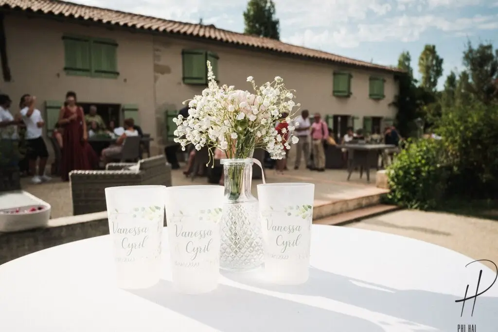
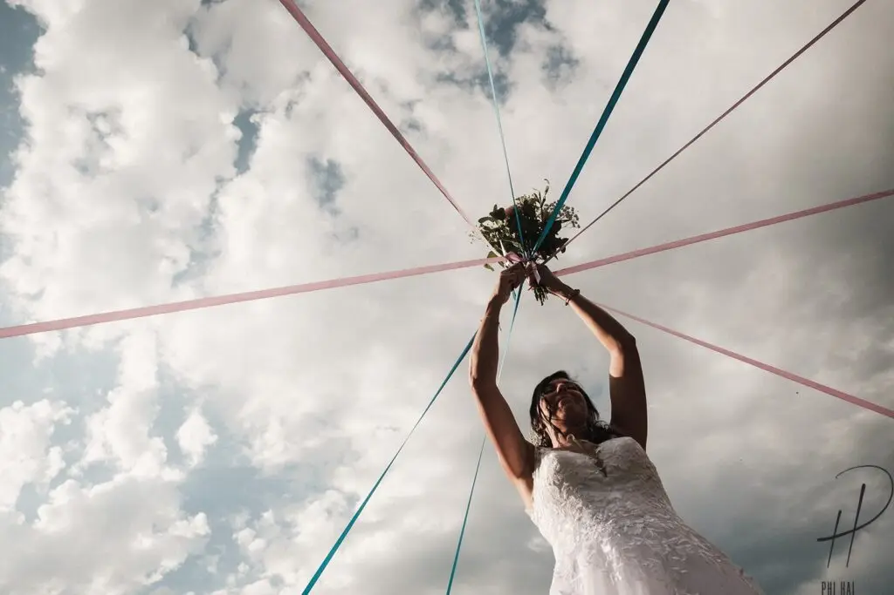
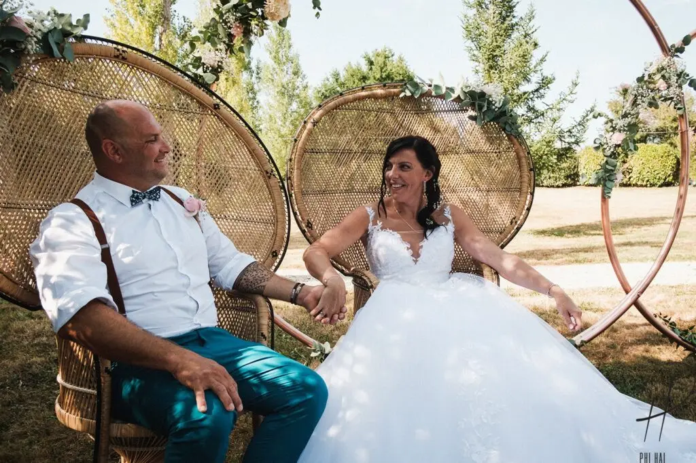

Décoration sobre et élégant
Se marier sur le thème champêtre est très en vogue pour tous les amoureux de la nature et la simplicité en région bordelaise et je peux vous trouver les meilleurs lieux grâce à mon métier d’organisatrice de mariage !

Ce sont des matières naturelles avant tout comme le lin, le raphia, le coton ou la toile de jute qui vont bien pour le thème champêtre, on retrouvera également de la dentelle qui apportera une touche chic.
Avec un lieu atypique dans le département de la Gironde comme un château par exemple, avec les briques apparentes et les poutres anciennes qui favorisent la mise en lumière des objets chinés et les fleurs naturelles.

Vous le savez sûrement mais mon métier de wedding planner et designer me permet d’accompagner les mariés sur tous les préparatifs en passant des prestataires de mariage, aux animations, aux conseils de tradition et de nouvelles tendances, à la décoration avec une scénographie personnalisée et à l’aide dans la gestion des invités. C’est ainsi que les mariés ont pu réellement profiter de leur mariage et surtout de leurs convives.
Le petit plus a été le jardin transformé dans une ambiance cosy. Quel bonheur que de trinquer lors du vin d’honneur au cœur du vignoble bordelais !





Lovely Day Event c'est plusieurs types de prestations
L'organisation de mariage
Je vais intervenir sur toutes les étapes de vos préparatifs et vous guider dans vos choix. Je suis force de proposition pour que votre mariage ne ressemble qu’à vous.
Décoration de mariage
Créative et passionnée, je suis certifiée Wedding Designer et je conçois une ambiance scénographique qui correspond au thème de votre mariage.
Coordination le jour J
Je serai le chef d’orchestre pour gérer les différents prestataires, la mise en place de votre décoration et le déroulement de cette belle journée.